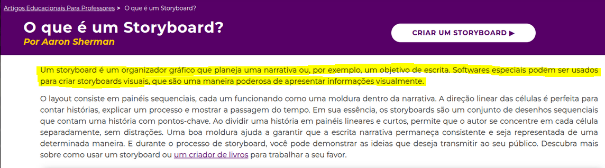
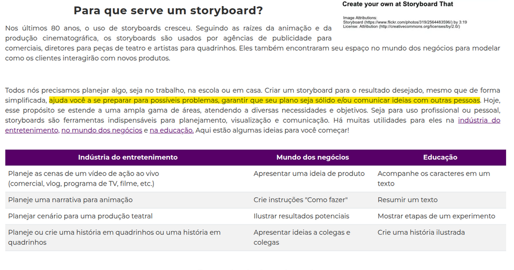
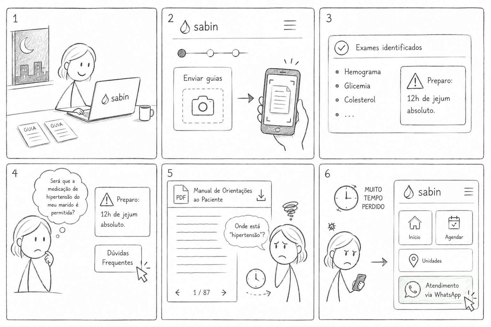
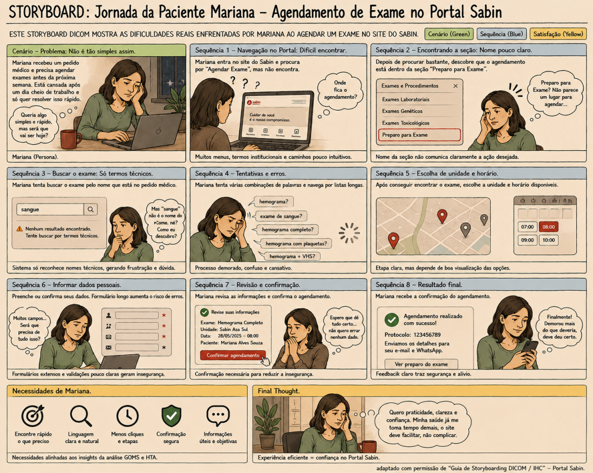
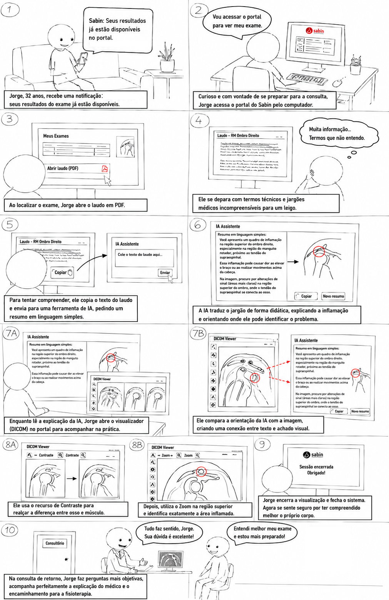

Storyboards do Projeto¶
Tabela de contribuição¶
| Artefato(s) | Autor(es) |
|---|---|
| Página de Storyboards da Equipe | Maria Laura Regis |
| Primeiro Storyboard | Maria Laura Regis |
| Segundo Storyboard | Hugo Freitas Silva |
| Terceiro Storyboard | Philipe Amancio |
| Quarto Storyboard | Ingrid Alves |
1. Introdução¶
Um storyboard é uma representação visual que ilustra uma narrativa, um processo ou um cenário de uso. Segundo Sherman (StoryboardThat, 2023)[PRINT] 
Para a avaliação e o reprojeto do Portal Sabin, os storyboards foram fundamentais para modelar como os usuários interagem com as funcionalidades existentes, permitindo validar percepções e fluxos antes da transição para protótipos de alta fidelidade.
Posicionamento no Ciclo de Vida de Mayhew¶
No Ciclo de Vida de Mayhew (BARBOSA; SILVA, 2021, p. 110)[PRINT], o desenvolvimento de sistemas interativos é organizado em três grandes fases: Análise de Requisitos, Design, Avaliação e Desenvolvimento, e Instalação. Os Storyboards e a Avaliação de Análise de Tarefas integram o Nível 1 da fase de Design, Avaliação e Desenvolvimento, conforme ilustrado abaixo. Para mais detalhes sobre como o grupo adotou esse ciclo de vida, consulte a página de Processo de Design.
| Fase Mayhew | Nível | Artefato desta seção |
|---|---|---|
| Design, Avaliação e Desenvolvimento | Nível 1 — Modelo conceitual e avaliação de alternativas de design | Storyboards, Análise de Tarefas, Cenários |
| Design, Avaliação e Desenvolvimento | Nível 2 | Protótipo de Papel |
| Design, Avaliação e Desenvolvimento | Nível 3 | Protótipo de Alta Fidelidade |
Neste nível, o objetivo é validar o modelo conceitual do sistema junto aos usuários — verificando se as narrativas, fluxos e estrutura de tarefas mapeados pela equipe correspondem ao modelo mental e às necessidades reais dos participantes. Os problemas identificados nesta etapa orientam o redesign dos fluxos antes que qualquer tela seja prototipada, reduzindo retrabalho nas etapas seguintes.
2. Para que serve um Storyboard?¶
O uso de storyboards vai muito além da produção cinematográfica. De acordo com o (StoryboardThat, 2023)[PRINT] 
- Modelar a interação: Mostrar como os clientes ou usuários interagem com produtos existentes ou propostos.
- Planejar fluxos: Criar instruções do tipo "como fazer" (passo a passo).
- Identificar riscos: Preparar a equipe para possíveis problemas antes da implementação, tornando o plano mais sólido.
- Comunicação: Ilustrar resultados potenciais para colegas e clientes.
3. Storyboards da Equipe¶
Nesta seção, apresentamos os storyboards desenvolvidos pela equipe para o Portal Sabin. Eles representam os fluxos de tarefas essenciais, conforme modelado em nossos diagramas de Análise de Tarefas.
3.1. Primeiro Storyboard¶
Elaborado por: Maria Laura Regis
Este storyboard ilustra o Cenário 02 — Pré-agendamento de exames com dúvidas críticas de preparo, tendo como persona central Márcia, servidora pública de 55 anos que centraliza a rotina médica de toda a família. A narrativa representa a jornada de Márcia ao tentar agendar exames de sangue para ela e para o marido pelo portal do Sabin, deparando-se com informações genéricas de preparo que não respondem à sua dúvida específica sobre o uso de medicação contínua para hipertensão. Conforme ilustrado na Figura 1, o fluxo evidencia os pontos de fricção que levam a persona a abandonar o fluxo automatizado e recorrer ao atendimento humano via WhatsApp.
Figura 1 — Pré-agendamento de Exames com Dúvidas Críticas de Preparo

Fonte: Autoria própria.
3.2. Segundo Storyboard¶
Elaborado por: Hugo Freitas Silva
Este storyboard também ilustra o Cenário 02 — Pré-agendamento de exames com dúvidas críticas de preparo, sob a perspectiva da persona Márcia. A narrativa representa a mesma jornada de agendamento, com foco nos pontos de atrito gerados pela ausência de orientações claras e personalizadas sobre preparo, reforçando os problemas identificados no fluxo automatizado do portal. Conforme ilustrado na Figura 2, o storyboard complementa a visão do Cenário 02 ao destacar aspectos da experiência que motivam o abandono do canal digital.
Figura 2 — Pré-agendamento de Exames com Dúvidas Críticas de Preparo

Fonte: Autoria própria.
3.3. Terceiro Storyboard¶
Elaborado por: Philipe Amâncio
Este storyboard narra a experiência de Jorge ao receber uma notificação informando que seus resultados estão disponíveis no portal do Sabin. A história começa com a motivação de Jorge para se preparar para a consulta de retorno e a barreira inicial que ele encontra: um laudo médico repleto de termos técnicos incompreensíveis.
A narrativa ilustra a solução de Jorge para essa frustração: o uso de Inteligência Artificial para traduzir o jargão para uma linguagem simples. Em seguida, o storyboard foca na interação de Jorge com as ferramentas digitais do portal do Sabin. Motivado pela explicação da IA, ele utiliza o visualizador de imagens DICOM e aplica, de forma intuitiva, as ferramentas de Contraste e Zoom para identificar visualmente a inflamação em seu ombro.
O storyboard encerra na consulta de retorno, demonstrando o resultado desejado: Jorge comparece seguro, com dúvidas objetivas e preparado para compreender perfeitamente o diagnóstico e o plano de tratamento do seu médico
Figura 3 — Acesso ao Resultado de Imagem com Visualizador DICOM

Fonte: Autoria própria.
3.4. Quarto Storyboard¶
Elaborado por: Ingrid Alves
Este storyboard ilustra o Cenário 04 — Acompanhamento de resultados e download de laudos durante o pré-natal, tendo como persona central Camila, professora de 29 anos grávida de 24 semanas. A narrativa representa a jornada de Camila ao tentar acessar, no intervalo de suas aulas, o resultado urgente de sua Curva Glicêmica e enviá-lo à obstetra. Conforme ilustrado na Figura 4, o fluxo evidencia como a fragmentação dos arquivos de resultado — que exige o download de três PDFs separados para um único exame seriado — gera atrito e carga de trabalho desnecessária, mesmo que a tarefa principal seja concluída com sucesso.
Figura 4 — Acompanhamento de Resultados e Download de Laudos durante o Pré-natal
Fonte: Autoria própria.
Referências Bibliográficas¶
- STORYBOARDTHAT. O que é um Storyboard? Por Aaron Sherman. Disponível em: https://www.storyboardthat.com/pt/articles/e/o-que-%C3%A9-um-storyboard. Acesso em: 19 mai. 2026.
Histórico de Versão¶
| Versão | Data | Descrição | Autores | Data Revisão | Descrição Revisão | Revisores |
|---|---|---|---|---|---|---|
| 1.0 | 18/05/2026 | Criação do documento | Maria Laura Regis | 18/05/2026 | Revisão da estrutura inicial e do conteúdo + adição das imagens | Hugo Freitas Silva |
| 1.1 | 23/05/2026 | Correções conceituais, padronização ABNT das figuras e vinculação dos storyboards aos cenários e personas do projeto | Maria Laura Regis | 23/04 | ||
| 1.2 | 23/06/2026 | Adição do posicionamento no Ciclo de Vida de Mayhew na seção de Introdução | Ingrid Alves | - | - | - |
| 1.3 | 23/06/2026 | Adição de link para a página de Processo de Design na seção de posicionamento no Ciclo de Vida de Mayhew | Ingrid Alves | - | - | - |